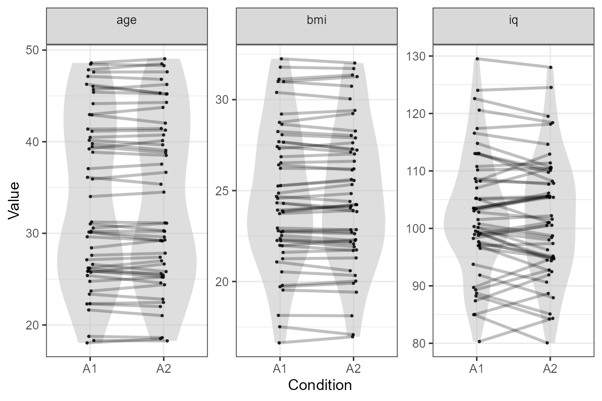
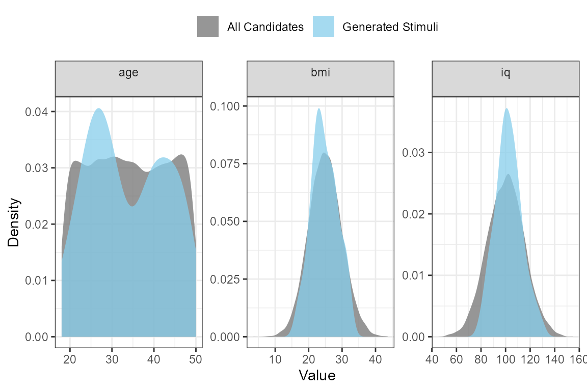

vignettes/participant-selection.Rmd
participant-selection.RmdLexOPS has potential applications in designing between-subject studies that control for participant variables. In this example, a randomised control trial is imagined, where subjects need to be matched for some relevant variables such as age, sex, BMI, and IQ. Given the pool of possible participants, LexOPS can be used to match subjects in the intervention and control conditions.
Firstly, we will simulate the imaginary dataset of the participant pool, consisting of 10000 potential subjects, representing the kind of data we might expect to have.
Now let’s imagine we want to assign 50 subjects to an intervention group, and 50 matched subjects to a control group. We want to match by the relevant subject variables of
In LexOPS, we could simply write this as follows:
study_subj <- pool |>
subset(!is.na(sex)) |>
set_options(id_col = "subj_id") |>
split_random(2) |>
control_for(age, -1:1) |>
control_for(sex) |>
control_for(bmi, -0.5:0.5) |>
control_for(iq, -5:5) |>
generate(50)## Generated 2/50 (4%). 2 total iterations, 1.00 success rate.Generated 5/50 (10%). 5 total iterations, 1.00 success rate.Generated 8/50 (16%). 9 total iterations, 0.89 success rate.Generated 10/50 (20%). 12 total iterations, 0.83 success rate.Generated 12/50 (24%). 14 total iterations, 0.86 success rate.Generated 15/50 (30%). 17 total iterations, 0.88 success rate.Generated 18/50 (36%). 23 total iterations, 0.78 success rate.Generated 20/50 (40%). 25 total iterations, 0.80 success rate.Generated 22/50 (44%). 27 total iterations, 0.81 success rate.Generated 25/50 (50%). 32 total iterations, 0.78 success rate.Generated 28/50 (56%). 38 total iterations, 0.74 success rate.Generated 30/50 (60%). 40 total iterations, 0.75 success rate.Generated 32/50 (64%). 42 total iterations, 0.76 success rate.Generated 35/50 (70%). 46 total iterations, 0.76 success rate.Generated 38/50 (76%). 49 total iterations, 0.78 success rate.Generated 40/50 (80%). 52 total iterations, 0.77 success rate.Generated 42/50 (84%). 54 total iterations, 0.78 success rate.Generated 45/50 (90%). 57 total iterations, 0.79 success rate.Generated 48/50 (96%). 60 total iterations, 0.80 success rate.Generated 50/50 (100%). 64 total iterations, 0.78 success rate.This returns a dataframe, listing the subject IDs for the 50 subjects in each group. Here are the first 5 rows (10 subjects):
head(study_subj, 5)| item_nr | A1 | A2 | match_null |
|---|---|---|---|
| 1 | s3854 | s6190 | A2 |
| 2 | s6828 | s9539 | A1 |
| 3 | s5117 | s5037 | A1 |
| 4 | s1949 | s8576 | A2 |
| 5 | s9516 | s2244 | A1 |
We can see the subjects’ data in long format with the
long_format() function. Here is the data for those same 10
subjects in long format. The item_nr column indicates which
subjects are matched to one another.
study_subj |>
long_format() |>
head(10)| item_nr | condition | match_null | subj_id | age | sex | bmi | iq | |
|---|---|---|---|---|---|---|---|---|
| 1 | 1 | A1 | A2 | s3854 | 46.26838 | f | 24.67811 | 93.75488 |
| 51 | 1 | A2 | A2 | s6190 | 45.30589 | f | 24.40314 | 90.64059 |
| 2 | 2 | A1 | A1 | s6828 | 27.11425 | m | 30.39683 | 98.25624 |
| 52 | 2 | A2 | A1 | s9539 | 27.39330 | m | 30.04129 | 100.51395 |
| 3 | 3 | A1 | A1 | s5117 | 22.29670 | m | 21.07737 | 103.52345 |
| 53 | 3 | A2 | A1 | s5037 | 22.00888 | m | 20.59216 | 105.53988 |
| 4 | 4 | A1 | A2 | s1949 | 18.04363 | f | 24.32548 | 89.71401 |
| 54 | 4 | A2 | A2 | s8576 | 18.51086 | f | 24.04008 | 94.47304 |
| 5 | 5 | A1 | A1 | s9516 | 29.62372 | f | 22.25753 | 84.98969 |
| 55 | 5 | A2 | A1 | s2244 | 29.21542 | f | 22.18613 | 80.06989 |
We can use the plot_design() function to see how well
our numeric variables have been controlled for. Individual points
represent subjects, with matched subjects connected by lines. Variables
more tightly controlled show more similar distributions, and only gentle
slopes between points.
plot_design(study_subj)
We can check how many males and females we have in each group like so:
study_subj |>
long_format() |>
count(condition, sex)| condition | sex | n |
|---|---|---|
| A1 | f | 22 |
| A1 | m | 28 |
| A2 | f | 22 |
| A2 | m | 28 |
Finally, we can use plot_sample() to see how
representative our sample is of our whole participant pool.
plot_sample(study_subj)